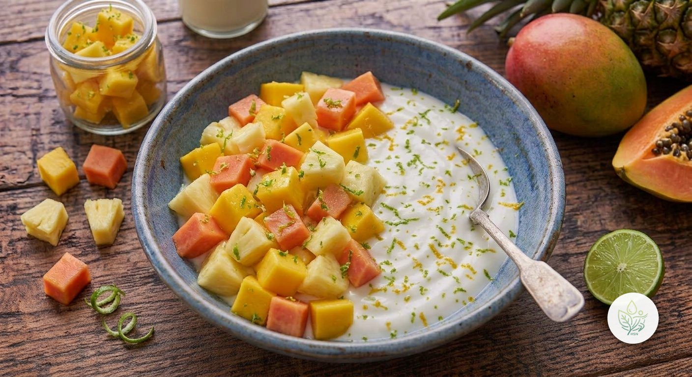

Bowl Tropical de Mango, Piña y Papaya
AUn bowl de fruta tropical sobre base de yogur de soja: mango, piña y papaya, con un chorrito de lima. Sin azúcar añadido y con muy poca grasa saturada.
El mango, la piña y la papaya comparten un perfil rico en vitamina C y antioxidantes, cada una aportando además algo propio: betacarotenos el mango, bromelina la piña, y papaína la papaya, dos enzimas con propiedades digestivas. La lima realza el dulzor de la fruta sin necesidad de azúcar añadido, y el yogur de soja da consistencia al bowl con proteína vegetal.
Ingredientes (toca el nombre para ver su ficha)
- 150 g
- 100 g
- 100 g
- 100 g
- 10 g
Elaboración
- Vierte el yogur de soja en la base de un bowl.
- Pela y corta el mango, la piña y la papaya en dados.
- Reparte toda la fruta sobre el yogur de soja.
- Termina con un chorrito de zumo de lima.
Información nutricional (receta completa)
De las grasas, 0.7 g son saturadas · de los carbohidratos, 35.8 g son azúcares · sodio: 70.2 mg
Preguntas frecuentes
¿Cuántas calorías tiene la receta de Bowl Tropical de Mango, Piña y Papaya?
Esta receta tiene 232.5 kcal en total (1 ración).
¿Es una receta vegana?
Sí, todos los ingredientes son de origen vegetal.
¿Se puede preparar con antelación?
El mango y la piña aguantan bien un par de días en la nevera ya cortados; la papaya y la lima es mejor añadirlas justo antes de servir.
¿Por qué lleva lima?
Su acidez realza el dulzor de la fruta tropical sin necesidad de añadir azúcar.